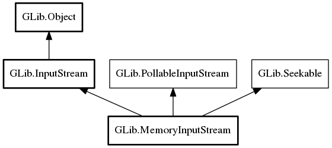

MemoryInputStream
Object Hierarchy:
Description:
MemoryInputStream is a class for using arbitrary memory chunks as input for GIO streaming input operations.
As of GLib 2.34, MemoryInputStream implements PollableInputStream.
Namespace: GLib
Package: gio-2.0
Content:
Creation methods:
Methods:
Inherited Members:
All known members inherited from class GLib.InputStream

All known members inherited from class GLib.Object
All known members inherited from interface GLib.PollableInputStream
All known members inherited from interface GLib.Seekable